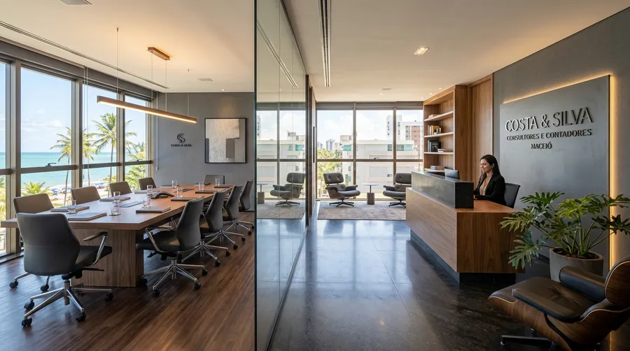
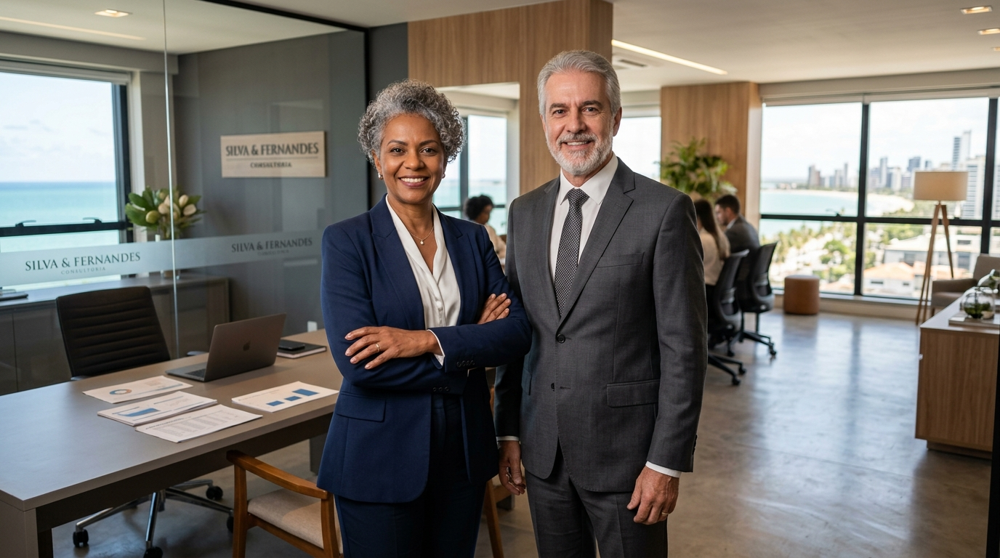

A Concentre Contabilidade e Consultoria Empresarial alia rigor técnico, proximidade humana e tecnologia para transformar obrigações contábeis em economia tributária legítima, segurança jurídica e clareza para decisões de liderança em Maceió e em todo o estado de Alagoas.

A Concentre Contabilidade e Consultoria Empresarial nasceu com o propósito de romper o formato tradicional e mecânico dos escritórios convencionais. Não nos limitamos a calcular guias e entregar declarações de impostos.
Atuamos como verdadeiros conselheiros de negócios para líderes, diretores e empreendedores em Maceió e em todo o estado de Alagoas. Com uma abordagem consultiva baseada em indicadores reais, identificamos desperdícios tributários, estruturamos processos de fluxo de caixa e blindamos sua operação societária.

Proporcionar segurança contábil, conformidade legal e inteligência estratégica, transformando dados financeiros complexos em clareza para que os empresários tomem decisões fundamentadas e sustentáveis.
Ser a principal referência em contabilidade consultiva, planejamento tributário preventivo e BPO financeiro integrado no estado de Alagoas, reconhecida pelo atendimento ético, ágil e de alto valor agregado.
Ética inegociável em todos os atos, transparência tributária estrita, compromisso absoluto com o sigilo do cliente (LGPD), rigor técnico e constante busca pela excelência no relacionamento humano.
Um ecossistema completo planejado para acompanhar sua empresa em todas as fases de maturação, desde a fundação cadastral até a governança financeira de alta performance:
Interpretação aprofundada de Balanços, DRE analítica e índices de liquidez. Diferenciação clara entre faturamento e lucro, separação de finanças dos sócios e suporte em decisões de investimento e expansão.
Saiba MaisEstudo comparativo minucioso entre Simples Nacional, Lucro Presumido e Lucro Real. Aplicação legal do Fator R, revisão de alíquotas da SEFAZ-AL e elisão fiscal segura para reduzir custos de forma legítima.
Saiba MaisDiagnóstico de rentabilidade, cálculo científico do ponto de equilíbrio, apuração de margem de contribuição por produto ou serviço e planejamento detalhado de fluxo de caixa para previsibilidade do caixa.
Saiba MaisTerceirize as rotinas burocráticas de contas a pagar, emissão e controle de contas a receber, conciliação bancária diária e relatórios semanais para a diretoria, com total segurança de alçadas bancárias.
Saiba MaisGestão completa e segura de folhas de pagamento, férias, pró-labore, 13º salário, admissões, rescisões e envio pontual de eventos ao eSocial, prevenindo passivos e fiscalizações trabalhistas.
Saiba MaisElaboração de contratos sociais robustos, abertura ágil de CNPJ na JUCEAL, alterações de sócios, enquadramento de filiais, obtenção de alvarás na Prefeitura de Maceió e licenciamentos ambientais/sanitários.
Saiba MaisEmissão rápida de e-CNPJ e e-CPF com validação oficial ICP-Brasil. Atendimento ágil presencial na sede do Farol ou 100% online por videoconferência.
Saiba MaisDomicílio empresarial de prestígio para abertura e registro de CNPJ em Maceió. Ideal para prestadores de serviços, consultores e empresas remotas.
Saiba MaisAuditoria inicial sobre os últimos 12 meses fiscais da sua empresa para identificar pagamentos em duplicidade, erros de alíquota e economia viável.
Saiba MaisConfiguração de plataformas modernas de gestão financeira e faturamento (Omie, Conta Azul, etc.) conectadas em tempo real com a nossa contabilidade.
Saiba MaisCada setor possui regulamentações específicas, tributos diferenciados e desafios operacionais próprios. Conheça nossa atuação personalizada:
Planejamento para médicos e dentistas, redução tributária via equiparação hospitalar, correta aplicação do Fator R e blindagem contra inconsistências na DMED.
Simples Nacional • Lucro Presumido • DMEDEstruturação fiscal para SaaS, desenvolvimento de software e agências digitais. Emissão com retenção para outros estados e enquadramento ideal no Simples ou Presumido.
Exportação de Serviços • Retenções • Fator RDomínio da Substituição Tributária (ICMS-ST) perante a SEFAZ-AL, apuração de créditos, conciliação de adquirentes de cartão de crédito e controle de estoque fiscal.
ICMS-ST Alagoas • SPED Fiscal • PrecificaçãoAdesão ao RET (Regime Especial de Tributação) a 4%, segregação de SPEs com patrimônio de afetação, apuração de INSS sobre folha da obra e regularização no CNO/SERO.
RET 4% • SPE • CNO / SERO da Receita FederalAdvogados, arquitetos, engenheiros e consultores. Abertura ágil de CNPJ com Endereço Fiscal no Farol, emissão de NFS-e na Prefeitura de Maceió e tributação otimizada.
Endereço Fiscal • NFS-e Maceió • Livro CaixaPlanejamento sucessório seguro, proteção de patrimônio imobiliário, redução de alíquotas na locação de imóveis próprios e eficiência em inventários em Alagoas.
Holding Pura e Mista • Gestão de Bens • ITCMDSelecione a situação atual da sua empresa e veja como a metodologia da Concentre atua de forma direta:
Avaliamos minuciosamente o seu enquadramento entre Simples Nacional, Lucro Presumido e Lucro Real. Para clínicas e prestadores de serviços, simulamos o impacto real do Fator R e revisamos enquadramentos fiscais perante o Fisco de Alagoas.
Assumimos o agendamento de contas a pagar, controle de contas a receber, conciliação diária de extratos e elaboração de relatórios gerenciais, com segurança de alçadas bancárias exclusivas para você aprovar.
Ajudamos seu negócio a diferenciar faturamento de lucro líquido, mapear custos fixos e variáveis e calcular o ponto de equilíbrio necessário para operar com segurança e previsibilidade.
Interpretação aprofundada de demonstrações contábeis (DRE e Balanço) para orientar contratações, compras de equipamentos, busca de crédito bancário e reorganizações societárias.
Ideal para prestadores de serviços, consultores e empresas digitais que trabalham de forma remota e não precisam de salas comerciais próprias de alto custo. Consulta prévia de viabilidade na REDESIM.
Um ciclo estruturado de trabalho que assegura transição sem riscos e acompanhamento consultivo contínuo para sua gestão:
Auditoria inicial de documentos contábeis, extratos, obrigações em aberto e enquadramento tributário para identificar gargalos e economias imediatas.
Condução ética de toda a transição com a contabilidade anterior, sem exigir tempo do gestor e sem qualquer descontinuidade na sua operação diária.
Fechamentos contábeis rigorosos, conciliação diária, cumprimento antecipado de prazos fiscais e suporte humanizado via WhatsApp e telefone.
Apresentação estruturada de relatórios gerenciais, indicadores de lucratividade e reuniões de alinhamento com a diretoria para tomada de decisão.
Acreditamos que a tecnologia em nuvem é essencial para a agilidade do dia a dia, mas o contato presencial e a segurança de saber onde sua contabilidade está instalada são insubstituíveis.
Nossa sede corporativa fica na Rua João Nogueira, 80, no Farol, em ponto nobre de fácil acesso em Maceió. Contamos com salas de reunião executivas prontas para receber sócios, comitês e auditorias.
Rua João Nogueira, 80, no Farol, Maceió, AL, CEP 57051-110.
Telefone e WhatsApp corporativo: (82) 3202-6489 (Seg a Sex das 08h às 18h).

Sua contabilidade deve ser sinônimo de tranquilidade perante a fiscalização e perante seus sócios:
Profissionais registrados e em situação regular perante o Conselho Regional de Contabilidade de Alagoas.
Tratamento seguro de dados societários, bancários e de colaboradores conforme a Lei Geral de Proteção de Dados.
Auditorias prévias que garantem cumprimento rigoroso das exigências da Receita Federal, SEFAZ-AL e Municípios.
Entrega antecipada de guias, relatórios e obrigações acessórias sem risco de juros ou multas por atraso.
Análises aprofundadas para apoiar gestores e líderes na tomada de decisão contábil, tributária e financeira:
Entenda como a composição da folha, despesas operacionais e a margem de presunção de lucro determinam a melhor escolha para sua empresa.
Ler análise completaDescubra o cálculo exato para saber qual é o faturamento mínimo mensal necessário para cobrir todos os custos e despesas sem prejuízo.
Acessar com simuladorVeja como a análise de balanços e indicadores de rentabilidade transforma registros fiscais obrigatórios em inteligência competitiva.
Ler artigo de autoridadeDescubra como o BPO reduz custos trabalhistas de tesouraria e elimina erros de conciliação e atrasos em pagamentos.
Fazer diagnóstico onlineRespostas objetivas sobre nosso modelo de trabalho, contratação e serviços em Maceió:
O processo é 100% conduzido pela equipe de onboarding da Concentre de forma ética e profissional. Solicitamos diretamente ao seu antigo contador os livros contábeis, arquivos digitais, folhas e procurações, sem ruídos e sem interromper as operações do seu negócio.
Sim. Atendemos desde profissionais liberais, prestadores de serviços e empresas em estágio inicial que necessitam de Endereço Fiscal e Certificado Digital até médias empresas com operações estruturadas em Simples Nacional, Lucro Presumido e Lucro Real.
Combinamos o melhor dos dois mundos: suporte digital ágil pelo WhatsApp corporativo e telefone comercial para dúvidas imediatas, somado a reuniões presenciais na sede do Farol para alinhamentos societários e apresentação de comitês de indicadores.
Com certeza. Nossos produtos estratégicos podem ser adquiridos de forma avulsa. Você pode emitir seu Certificado Digital presencialmente ou por videoconferência e contratar o Endereço Fiscal no Farol com toda a segurança documental.
Por meio da elisão fiscal legal e do planejamento tributário preventivo. Analisamos detalhadamente seus CNAEs, folha de pagamento (Fator R), alíquotas do Simples vs. Presumido e regras da SEFAZ-AL para garantir que sua empresa pague apenas o imposto estritamente necessário.
Converse diretamente com um consultor sênior da Concentre na sede do Farol ou solicite um diagnóstico inicial sem custos para a sua empresa.